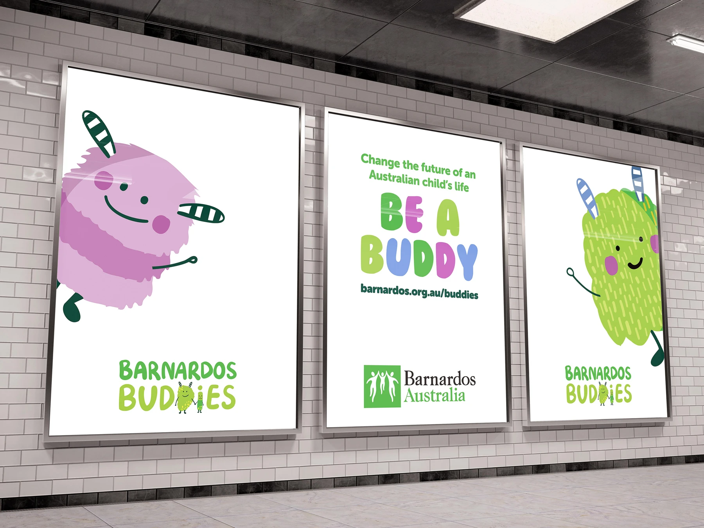
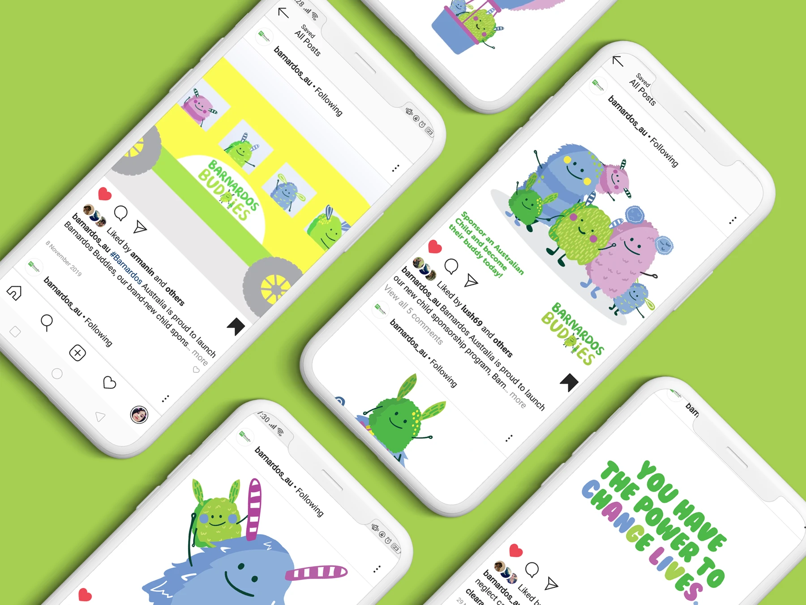
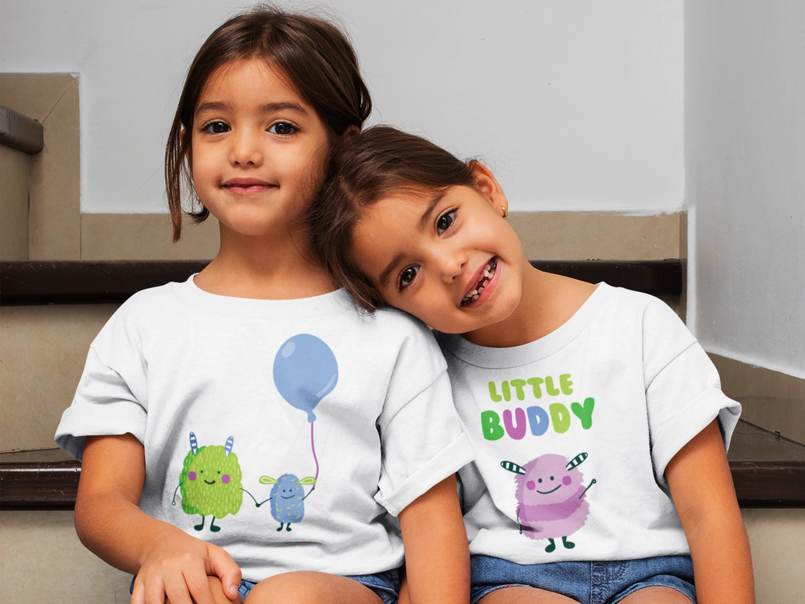

← All work
Barnardos Buddies.
Making regular giving feel like a lasting connection to a child’s future.
Barnardos AustraliaCreative direction, product development & rollout

More than a monthly donation.
Barnardos Buddies gave supporters a way to follow a child’s progress. Illustrated characters made the experience warm and recognisable while protecting children’s identities.
I led creative direction, product development and rollout, from paid social and outdoor to telemarketing and face-to-face acquisition. The relationship continued after sign-up through personalised updates, activity books and digital experiences that helped donors see the difference their support made.


Results
15,000
Buddies signed up following the 2019 launch
30%
Reduction in attrition
Next project
Jump Rope For Heart.